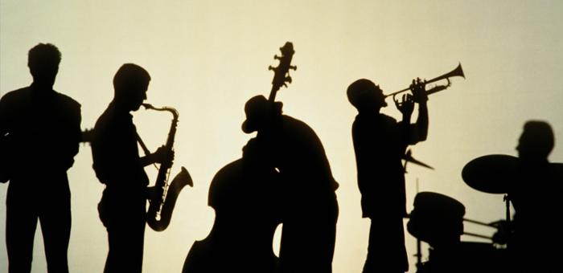

재즈의 역사
재즈(Jazz, 문화어: 쟈즈)는 19세기 말부터 20세기 초에 뉴올리언스에서 서양음악의 기술과 이론을 바탕으로 아프리카계 미국인 특유의 독특한 음악성이 가미된 대중음악의 한 장르이다. 음악적인 특징으로는 블루 노트, 당김음, 스윙, 부르고 답하기, 폴리리듬과 즉흥성 등을 뽑을 수 있고, "미국의 대중음악"으로 분류되며 미국 전역의 많은 술집에서 연주되던 것이 그 시작이었다. 아프로-아메리칸 음악은 서부 아프리카 원주민들의 음악에서 유래된 것으로 보고 있다. 이들 음악은 흔히 5음계(Pentatonic)와 싱코페이션(Syncopation)을 발견할 수 있다는 특색이 있다. 이러한 아프로-아메리칸 음악은 흑인들이 노예시절 기독교로 개종하면서 영가(Spiritual)의 형태로 계승되었다.